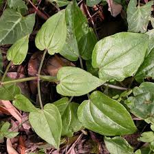
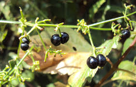

Tên khác
Xuyến thảo, Thiến thảo, Nùng sí sẻng (tiếng tày)
Tên khoa học: Rubia cordifolia L., thuộc họ Cà phê - Rubiaceae.
Cây Xuyến thảo:
(Mô tả, hình ảnh cây Xuyến thảo, phân bố, thu hái, thành phần hóa học, tác dụng dược lý...)
Mô tả:

Cây thảo sống nhiều năm, mọc leo hay trườn, thân vuông. Lá mọc đối, lá kèm có hình dạng và kích thước gần giống như lá bình thường, mọc thành vòng với lá; phiến lá xoan thon, đầu tù, gốc tròn, gân từ gốc 3; cuống dài 4-8mm. Cụm hoa chùy xim ở ngọn và ở nách lá, trục hoa chia 3 và có lông móc; hoa nhỏ, màu trắng, mẫu 4; bầu dưới 2 ô, mỗi ô chứa 1 noãn. Quả mọng hình cầu, đỏ, lúc chín màu tía đen.
Hoa quả tháng 8-10.
Bộ phận dùng: Rễ, thân - Radix et Caulis Rubiae Cordifoliae, thường gọi là Xuyến thảo hay Khiếm thảo
Phân bố, thu hái:
Cây mọc ở vùng nhiệt đới và cận nhiệt đới. Ở Việt Nam Cây mọc ở vùng núi cao, nơi ẩm; gặp nhiều ở Sapa (Lào Cai), Ba Vì (Hà Tây),.. Người ta thu hái rễ vào mùa xuân, mùa thu, rửa sạch, thái mỏng, phơi khô.
Thành phần hóa học:
Trong rễ có chất alizarin, purpuroxanthin, purpurin, pseudopurpurin, munjistin, ruberythric acid.
Vị thuốc thiến thảo:
(Công dụng, liều dùng, tính vị, quy kinh...)
Tính vị, tác dụng:
Vị đắng, tính hàn;
Công dụng:
lương huyết, chỉ huyết, hoạt huyết, khư ứ, chỉ thống
Quy kinh:
Túc quyết âm can
Liều dùng 6-15g, dạng thuốc sắc. Dùng ngoài trị đòn ngã tổn thương, mụn nhọt, viêm da thần kinh, rắn cắn; dùng tươi hay tán bột giã đắp hoặc nấu nước rửa.
Ứng dụng lâm sàng của thiến thảo:
Xuyến thảo thường được dùng để chữa các bệnh như Chảy máu cam, khạc ra máu, nôn ra máu, đái ra máu, đi ngoài ra máu, Tử cung xuất huyết, vô kinh, đau bụng kinh, kinh nguyệt không đều; Phong thấp đau nhức khớp xương, Viêm khí quản mạn tính; viêm gan hoàng đản, thùy thũng. ..
Dưới đây là Một số bài thuốc có vị thiến thảo
Đại thiến thang:
Đại kế 12g Lá trắc bá (sao cháy) 12g Lá sen 12g Tiểu kế 12g Thiến thảo 12g Rễ cỏ tranh 12g Chi tử (sao cháy) 12g Đan bì 12g Đại hoàng 12g
Trị chứng nôn ra máu
Chỉ huyết hắc như nhung điểm
(Thương Khoa Bổ Yếu - Tiền Tú Xương)
Gồm: Thiến thảo Đại hoàng, Hoàng bá, hoàng cầm, lưu kí nô, ngũ bội tử, Hoàng cầm, Ô mai
chủ trị: vết thương chẩy máu không cầm
Khoan cách lợi phủ thang:
Thiên Gia Diệu Phương, Q. Thượng.- Lý Văn Lượng
Sơ can giải uất, tiêu trệ, hòa vị, trị can khí uất kết phạm vào vị, túi mật viêm mạn tính.
Thiến thảo ............. 12g
Bạch thược ............ 18g
Binh lang ................12g
Cam thảo ................. 4g
Chỉ xác ................. 12g
Hậu phác ............... 10g
Mộc hương ...............6g
Ô tặc cốt ................ 10g
Sài hồ ................... 10g
Sơn tra .................30g g
Thương truật ........ 12g
Trần bì ................. 12g
Xuyên liên ............... 4g
Sắc uống.
Bài thuốc trị giảm tiểu cầu, chân tay bầm tím
Tam thất 9g, Thiến thảo 9g, Ngó sen 30g, Sinh địa 9g, Kỷ tử 15g, Bạch mao căn 30g, Hạt sen 30g, Thạch cao 3g
Âm dương chí thánh cao:
(Dương Y Đại Toàn, Q.7- Cố Thế Trừng)
Dùng để bôi vào vết thương
Tham khảo
Họ thiến thảo:
Họ Thiến thảo, danh pháp khoa học: Rubiaceae Juss. 1789) - có tài liệu phiên là thiên thảo, là một họ của thực vật có hoa, còn có thể gọi là họ cà phê, cỏ ngỗng. Trong một số sách giáo khoa tiếng Việt gọi là họ Cà phê, nhưng có thể gọi là họ Thiến thảo, lý do là tên gọi Rubiceae là dẫn xuất từ chi Rubia (thiến /thiên thảo) mà không là dẫn xuất từ chi Coffea (cà phê). Các loại cây phổ biến trong họ này bao gồm canh ki na, cây cà phê, câu đằng (Uncaria tonkinensis) và nhàu. Một số họ trước đây được chấp nhận (như Dialypetalanthaceae, Henriqueziaceae, Naucleaceae và Theligonaceae) hiện nay được đưa vào họ Rubiaceae theo các nghiên cứu di truyền học gần đây do Angiosperm Phylogeny Group tiến hành. Theo các định nghĩa hiện nay, có khoảng 611 chi và khoảng 13.150 loài thuộc về họ Rubiaceae[1].Các loài thuộc họ này là loại cây gỗ, cây bụi hoặc nửa bụi, đôi khi là cây thân thảo hay dây leo. Lá mọc đối, luôn có lá kèm với nhiều hình dạng khác nhau. Hoa thường tập hợp thành cụm hình xim, đôi khi hình đầu, mẫu 5 hoặc 4. Đài và tràng đều hợp, tràng có tiền khai hoa thường vặn, đôi khi van hay lợp. Trong một vài trường hợp số thùy của tràng có thể lên tới 8-10. Số nhị thường bằng với số thùy tràng và nằm xen kẽ giữa các thùy, dính vào ống tràng hoặc họng tràng. Bộ nhụy gồm hai lá noãn dính nhau thành bầu dưới, hai buồng. Một vòi nhụy mảnh, đầu nhụy hình đầu hay chia hai. Mỗi buồng của bầu chứa một đến nhiều noãn đảo hay thẳng. Quả mọng, hạch hay quả khô (quả mở hoặc quả phân thành những hạch nhỏ). Hạt thường có phôi thẳng có nội nhũ hoặc đôi khi không có. (wikipedia)
Nơi mua bán vị thuốc Xuyến thảo đạt chất lượng ở đâu?
Trước thực trạng thuốc đông dược kém chất lượng, nguồn gốc không rõ ràng,... xuất hiện tràn lan trên thị trường, làm ảnh hưởng tới hiệu quả điều trị cũng như ảnh hưởng tới sức khỏe của bệnh nhân. Việc lựa chọn những địa chỉ uy tín để mua thuốc đông dược là rất quan trọng và cần thiết. Vậy khách hàng có thể mua vị thuốc Xuyến thảo ở đâu?
Xuyến thảo là vị thuốc nam quý, được sử dụng rộng rãi trong YHCT. Hiện tại hầu hết các cửa hàng thuốc đông dược, phòng khám đông y, phòng chẩn trị YHCT... đều có bán vị thuốc này. Tuy nhiên người mua nên chọn những địa chỉ có uy tín, đảm bảo chất lượng, có giấy phép hoạt động để mua được vị thuốc đạt chất lượng.
Với mong muốn bệnh nhân được sử dụng những loại dược liệu đúng, chất lượng tốt, phòng khám Đông y Nguyễn Hữu Toàn không chỉ là đia chỉ khám chữa bệnh tin cậy, uy tín chất lượng mà còn cung cấp cho khách hàng những vị thuốc đông y (thuốc nam, thuốc bắc) đúng, chuẩn, đạt chuẩn chất lượng. Các vị thuốc có trong tiêu chuẩn Dược điển Việt Nam đều được nghành y tế kiểm nghiệm đạt chất lượng tiêu chuẩn.
Vị thuốc Xuyến thảo được bán tại Phòng khám là thuốc đã được bào chế theo Tiêu chuẩn NHT.
Giá bán vị thuốc Xuyến thảo tại Phòng khám Đông y Nguyễn Hữu Toàn: Gọi 18006834 để biết chi tiết
Tùy theo thời điểm giá bán có thể thay đổi.
+ Khách hàng có thể mua trực tiếp tại địa chỉ phòng khám: Cơ sở 1: Số 481 lô 22 Lê Hồng Phong, Phường Gia Viên, Thành phố Hải Phòng
+ Mua trực tuyến: Thuốc được chuyển qua đường bưu điện. Khi nhận được thuốc khách hàng thanh toán tiền COD.
Tag: cay Xuyen thao, vi thuoc Xuyen thao, cong dung Xuyen thao, Hinh anh cay Xuyen thao, Tac dung Xuyen thao, Thuoc nam
Thaythuoccuaban.com Tổng hợp
*************************